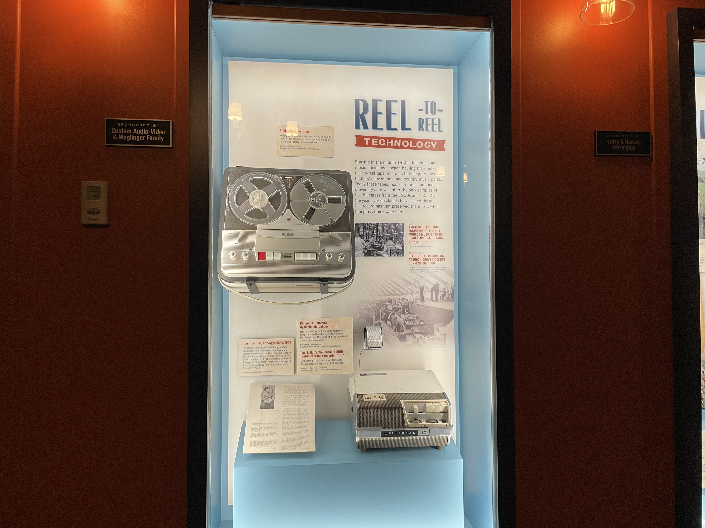
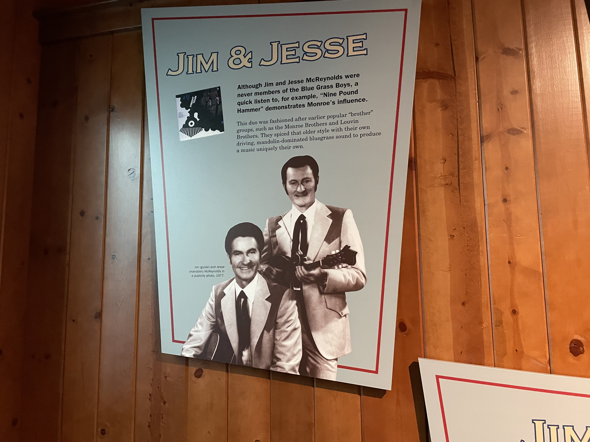
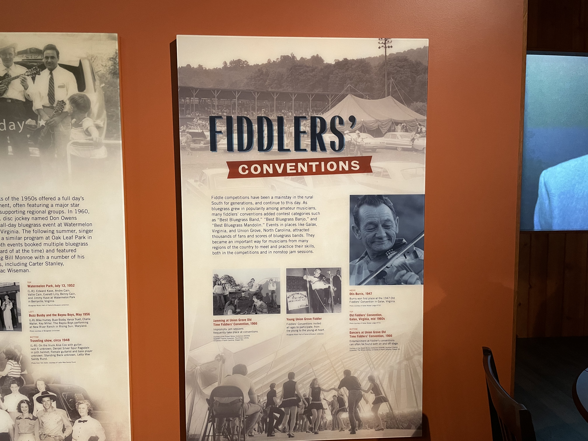

An almost abrupt end
Starting in the middle 1950s, folklorists and music aficionados began hauling their bulky reel-to-reel tape recorders to bluegrass bars, fiddlers' conventions, and country music parks. Today these tapes, housed in museum and university archives, offer the only samples of live bluegrass from the 1950s and '60s. Over the years, various labels have issued these live recordings that preserved the music when bluegrass times were hard.

Although Jim and Jesse McReynolds were never members of the Blue Grass Boys, a quick listen to, for example, "Nine Pound Hammer" demonstrates Monroe's influence. This duo was fashioned after earlier popular "brother" groups, such as the Monroe Brothers and Louvin Brothers. They spiced that older style with their own driving, mandolin-dominated bluegrass sound to produce a music uniquely their own.

Fiddle competitions have been a mainstay in the rural South for generations, and continue to this day. As bluegrass grew in popularity among amateur musicians, many fiddlers' conventions added contest categories such as "Best Bluegrass Band,” “Best Bluegrass Banjo," and "Best Bluegrass Mandolin." Events in places like Galax, Virginia, and Union Grove, North Carolina, attracted thousands of fans and scores of bluegrass bands. They became an important way for musicians from many regions of the country to meet and practice their skills, both In the competitions and in nonstop jam sessions.
Information provided by The Bluegrass Museum and Hall of Fame.